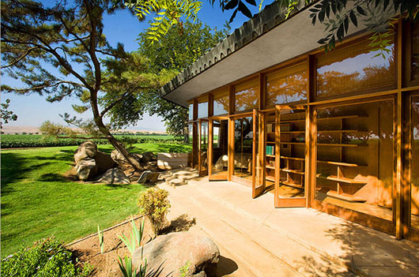

|  |
Cape Cod Home Plans
Cape Cod-style homes cropped up on the eastern seaboard between 1710 and 1850. Abundant timber resources in the New World encouraged the expansion of these traditional, one-room English cottages and marked them forever as the quintessential New England style. Cape Cod homes are simple and symmetrical, usually one-and-a-half stories, without a porch. A dominant roofline extends down to the first floor ceiling level, and often incorporates dormer windows for an even warmer touch.
Features Steep gable roof with small overhang Symmetrical design with clapboard siding Multi-pane, double-hung windows with shutters |